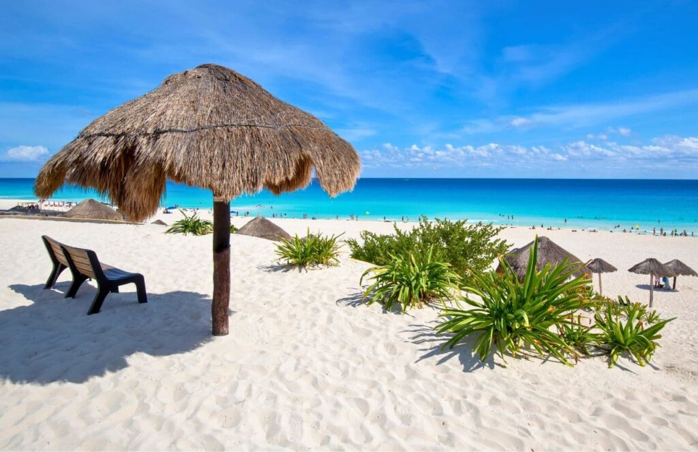
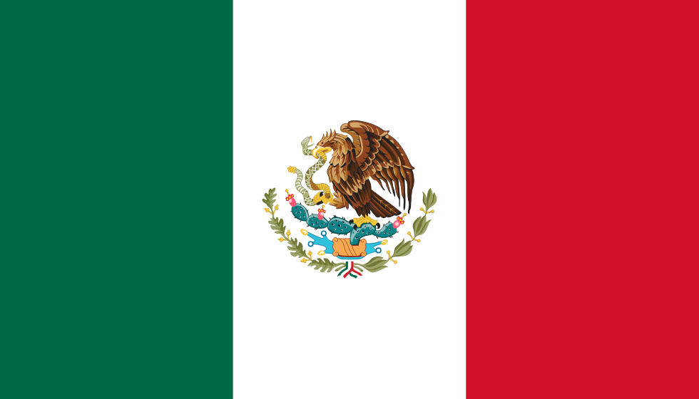
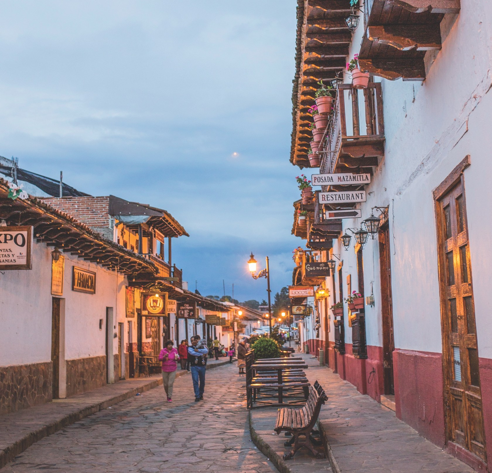
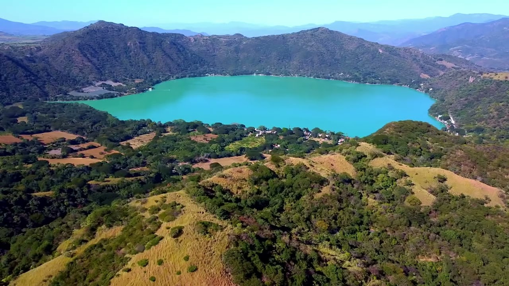
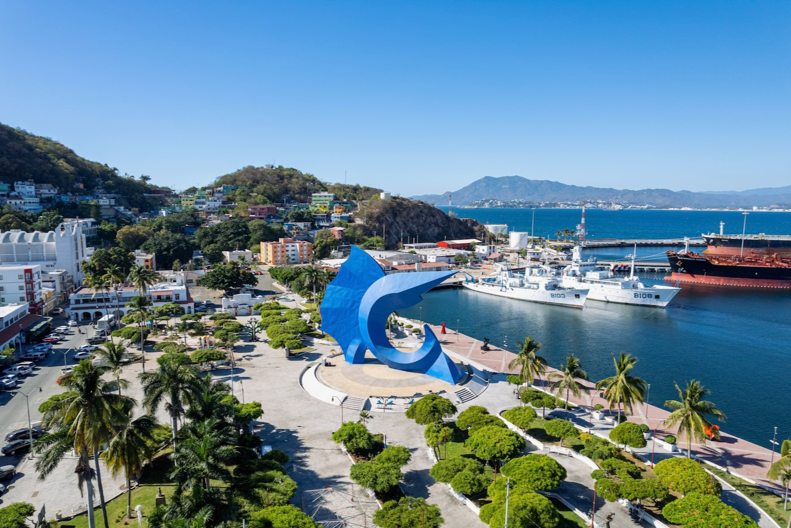
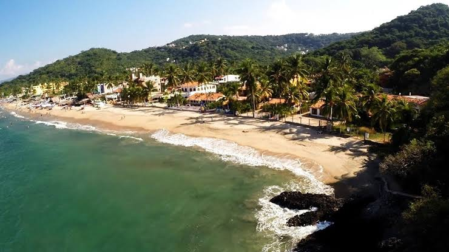

My Favorite Spots
A tour through five places I love or loved visiting.

Cancún

A world-famous resort city known for its pristine white-sand beaches, vibrant nightlife, clear turquoise Caribbean waters, and proximity to historic Mayan archaeological ruins.
- Province/State: Quintana Roo
- Country: Mexico
- Population: ~1,084,000
- Latitude & Longitude: 21°09'N 86°49'W

Mazamitla
A picturesque alpine village nestled in the Sierra del Tigre mountains. Often called the "Switzerland of Mexico," it is officially designated as a Pueblo Mágico (Magical Town) due to its rustic wood cabins, pine forests, and eco-tourism.
- Province/State: Jalisco
- Country: Mexico
- Population: ~14,043
- Latitude & Longitude: 19°55'N 103°01'W

Santa María del Oro
A scenic municipality famous for its spectacular crater lake (Laguna de Santa María del Oro). It serves as a popular destination for water sports, camping, nature hiking, and traditional lakeside dining.
- Province/State: Nayarit
- Country: Mexico
- Population: ~24,911
- Latitude & Longitude: : 21°20'N 104°35'W

Manzanillo
A major Pacific oceanfront destination consisting of two large bays. It holds the title of Mexico’s busiest commercial cargo port and is famously nicknamed the "Sailfish Capital of the World" due to its premier international sportfishing tournaments.
- Province/State: Colima
- Country: Mexico
- Population: ~191,000
- Latitude & Longitude: 19°03'N 104°19'W

Los Ayala
A small, laid-back beach town and traditional fishing village. It features calm, warm swimming waters, lush jungle covered hills, a relaxed family friendly vibe, and exceptional opportunities for local bird watching.
- Province/State: Nayarit
- Country: Mexico
- Population: ~618
- Latitude & Longitude: 21°01'N 105°18'W
← Back to Homepage